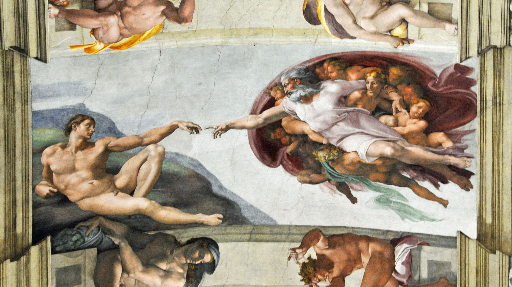

Amb quadres amb tant de significat com la gioconda
a l'art de modelar el fang, tallar en pedra, fusta i altres materials
Les característiques principals de l'escultura grega són: L'home serà el centre de l'escultura grega, antropocentrisme; bellesa, expressió i moviment defineixen els trets capitals de l'escultura grega.


L'escultura romana va destacar sobre la grega quant a la creació de l'escultura-retrat.
Al començament, l'escultura romana de retrat només representava el cap i la part del coll. Posteriorment, s'avança en la representació de tot el bust, incloent-hi espatlles i pit.
El Neoclassicisme és un estil artístic inspirat en l'art clàssic a on s'adopta un llenguatge artístic clar i ordenat.